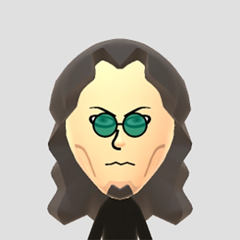

TIM YANG ｜ Visual Designer十餘年新聞媒體與品牌視覺經驗，個人風格強烈，專長橫跨平面設計、UI／UX、動態影音與網頁敘事。相信簡潔的畫面，能承載最複雜的訊息。
楊 殿宏（TIM YANG），1982年生，SOLOキャンプ40代おじさん。I人無誤、大叔級資深肥宅王者，日本旅遊超過四十趟，旅居醉酒有達2個月，主要出沒在東京和關東地區，熱愛露營、金屬類音樂，遊戲資歷從任天堂紅白機發售到現在PS5，有資訊前端工程背景、 SCA 烘豆師資格的 OUTDOOR LIFE 視覺專案管理師。
專為台灣新世代質感青年打造，飲食與生活風格內容專題，依主題分為以下四個系列。
以上動畫作品，從腳本撰寫、分鏡、幕後次要配音、角色人物繪製、動畫動態呈現皆由本人執行，其餘資料彙整、校對、幕後主要配音則由同仁一起處理。一部動畫製作時期從三周到一個月半不等。